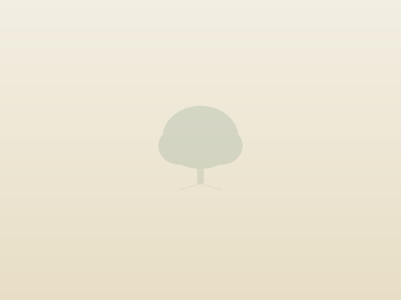
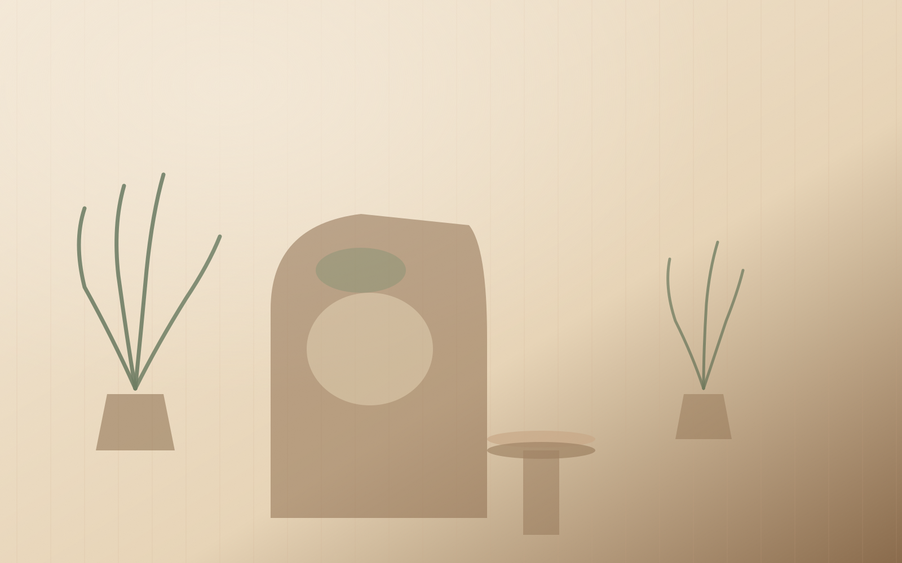
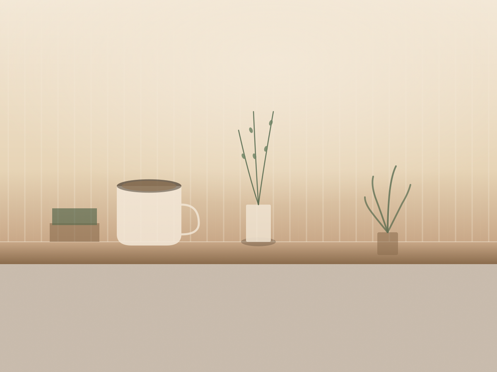

Trauma & Emotional Healing
Evidence-based support for children, teens, and adults carrying anxiety, grief, or the weight of unspoken story.
Learn moreA culturally rooted therapy practice for children, teens, and families. We help you move beyond the behaviour, into the story, and out the other side whole, grounded, and free to bloom.

Before Joanne was a counsellor, she was a teacher. For over a decade across classrooms in Nigeria and beyond, she watched children who were brilliant, exhausted, and quietly carrying things no child should carry alone. Robora was built from what she learned in those rooms: that behaviour is a language, and healing begins the moment someone finally translates it.
Healing is not a performance. It is quiet, patient, structural work. We meet families where the silence has settled, where conflict has learned the shape of the home, where a child is asking for help in the only language they know. Then we begin.
Every person carries resilience worth uncovering.
Behaviour is communication. We listen first.
No one heals in isolation. Trusted adults hold the work.
Faith is a resource for those who hold it. The work stands for all.
Each of our offerings is a different kind of doorway. Whatever you carry, there is a way in, and a way through.
Evidence-based support for children, teens, and adults carrying anxiety, grief, or the weight of unspoken story.
Learn morePlay, art, and story-based work for ages six to eighteen. Teens navigating identity, pressure, and the shape of growing up.
Learn more
Rebuild connection, communication, and trust at home. Attachment repair and parent coaching for the long road.
Learn moreTrauma-informed teaching workshops, student wellbeing programs, and partnership with teachers who hold the room.
Learn more
For stronger homes, closer bonds.
For growing minds and tender hearts.
For teachers holding the room.
For leaders carrying their flock.
Therapy is a journey, not a race. We move at a pace that feels right for you, with support every step of the way.
Robora is a rare find. A space that truly sees you, meets you where you are, and helps you grow in a way that feels genuine and real. I am grateful for the support and guidance.
A. M. Client

You do not have to do this alone. Let us talk about how support can help you move forward. The first 20 minutes are on us.